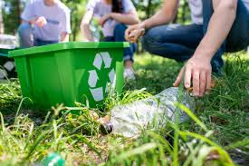
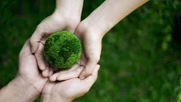
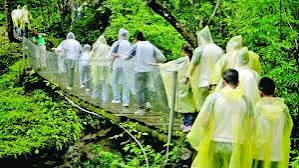

* TURISMO SOSTENIBLE*
Consiste en una forma de viajar donde se respeta tanto a la poblacion local como al viajero al patrimonio cultural y al medio ambiente desempeña un papel importante en la conservacion de la biodiversidad al minimizar
su impacto ambiental en el presente y el futuro. La clave principal que la explotacion de un recurso sea de bajo del limite de renovacion del mismo es decir se trata de formetar un turismo respetuoso con el ecosistema con minimo impacto
sobre el medio ambiente y la cultura local.

*OBJETIVOS DEL TURISMO SOSTENIBLE*
- En el terreno economico conseguir un crecimiento sostenible e inclusivo a travez de la creacion de empleo y la reduccion de los niveles de pobreza.
- En el medio ambiente hacer un uso efieciente de los recursos naturales la proteccion madio ambiental y la lucha contra el cambio climatico.
- Anivel social e individual formentar la compresion mutua para garantizar la paz y la seguridad y promover los valores culturales la diversidad y la patrimonio.

*CARACTERISTICAS DE TURISMO SOSTENIBLE*
- MEDIO AMBIENTALES
- Reduce el impacto que se produce sobre el medio ambiente a travez de un uso responsable de sus recursos.
- Consigue que el desarrollo ente en equilibrio con las necesidades medio ambientales.
- Genera beneficios economicas que producen de los recursos de la fauna y de la flora.
- CULTURALES
- El turismo sotenible formenta las relaciones entre personas de distintas culturales a partir de la tolerancia y el repesto hacia las comunidades de acogida.
- Promueve diferentes actividades para la restauracion y preservacion de aquellos espacios o lugares actractivo para el vistante con su conservacion previve el acervo cultural de la zona.

- SOCIALES
- El turismo sostenible formenta la creacion de empleados asi como a desarrollo de nuevas empresas especializadas .
- Mejorar las infraestructuras de la zona rurales.
- Ayuda a rectivar las zonas rurales.
- Mejorar la calidad de los servicios de la poblacion local.
gomez gomez cleydi y@reni
6105 P.T.B informatica
02-05-2024